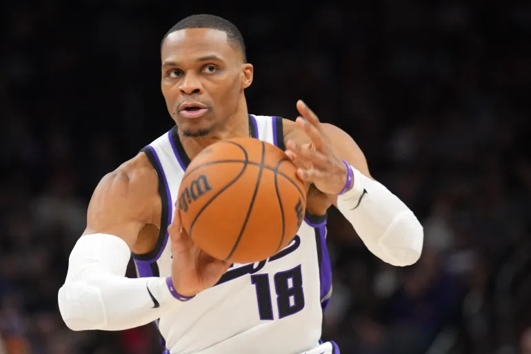

Russell Westbrook Walks Away From NBA After Legendary 18-Year Run
Sports | NBA
Published: Wednesday, August 13, 2026

Russell Westbrook is stepping away from professional basketball.
The nine-time All-Star announced Wednesday that he is retiring at age 37, ending an 18-season NBA career that included stops with seven different franchises and produced one of the most remarkable statistical résumés in league history.
Westbrook revealed the decision through social media, sharing a career retrospective narrated by actor Michael B. Jordan. In his message, he reflected on the unexpected way careers eventually come to an end.
Despite having opportunities to continue playing, including reported interest from Sacramento and Washington, Westbrook chose retirement rather than taking another NBA contract.
A Career That Changed the Game
Westbrook entered the league in 2008 after playing at UCLA. The Seattle SuperSonics selected him fourth overall, but the franchise relocated to Oklahoma City before he ever suited up for the team.
That move ultimately gave the Thunder one of the most important players in franchise history.
Westbrook spent 11 seasons in Oklahoma City and became the face of the organization following the departures of Kevin Durant and James Harden.
The Thunder's young core reached the NBA Finals in 2012, where they lost to the Miami Heat. Westbrook was just 23 at the time but already showed the explosive scoring ability and intensity that would define his career.
He eventually left Oklahoma City as the franchise's leader in several major statistical categories, including points, assists, rebounds and steals.
The Triple-Double Era
Perhaps no part of Westbrook's career was more memorable than his ability to pile up triple-doubles.
In 2016-17, he accomplished something that had not been done in more than five decades. Westbrook averaged a triple-double for an entire season, finishing with 31.6 points, 10.7 rebounds and 10.4 assists per game.
That performance earned him the league's MVP award.
He also recorded 42 triple-doubles that season, setting an NBA record that highlighted just how unusual his all-around production had become.
Several years later, Westbrook surpassed Oscar Robertson's career triple-double record. He ultimately finished with 209, leaving him comfortably at the top of the all-time list.
The Later Chapters
Westbrook's post-Oklahoma City career became a tour of the league.
He played for Houston, Washington, the Los Angeles Lakers, the Los Angeles Clippers, Denver and Sacramento. His role changed as he moved into the later stages of his career, but he continued producing at a high level.
During his final season with the Kings, Westbrook averaged 15.2 points, 6.7 assists and 5.4 rebounds while starting 58 games.
He also became the NBA's career leader in rebounds among point guards and reached another statistical milestone by joining LeBron James as the only players to record at least 25,000 points and 10,000 assists.
Where Westbrook Ranks
Westbrook finishes his career with 27,176 points, placing him 14th on the NBA's all-time scoring list. He also ranks fifth in career assists.
His final career averages were 20.9 points, 6.9 rebounds and 8.0 assists per game.
The one major achievement that eluded him was an NBA championship. Still, his individual accomplishments put him among the most productive guards the league has ever seen.
From his high-flying years in Oklahoma City to his record-setting triple-double seasons and his long journey around the NBA, Westbrook leaves behind a career defined by intensity, durability and statistical production.
After 18 seasons, the former MVP has decided his next chapter will begin away from the basketball court.